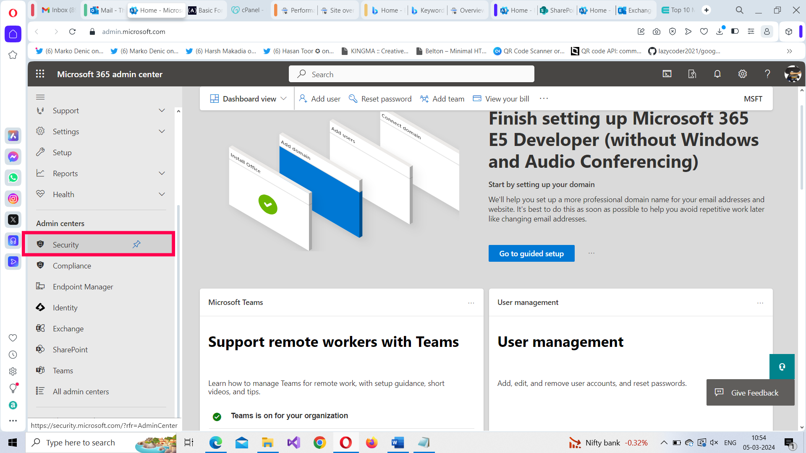
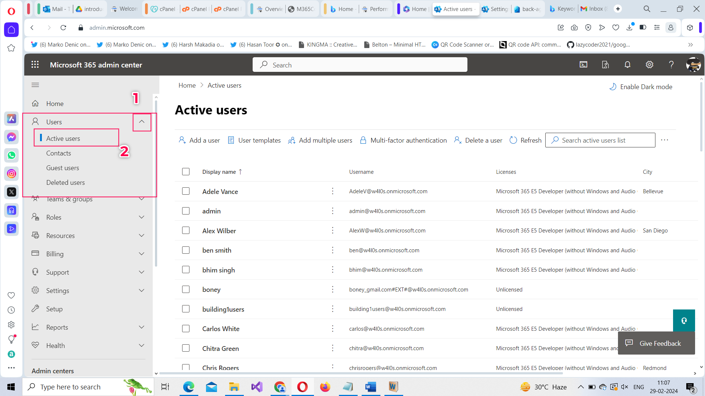
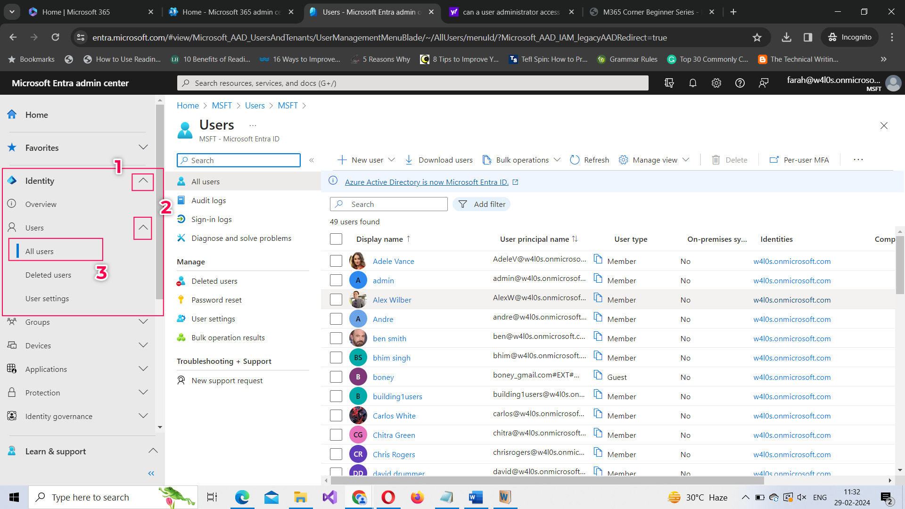
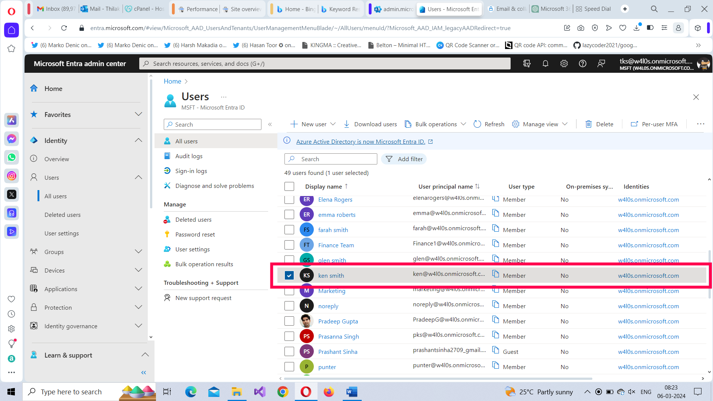
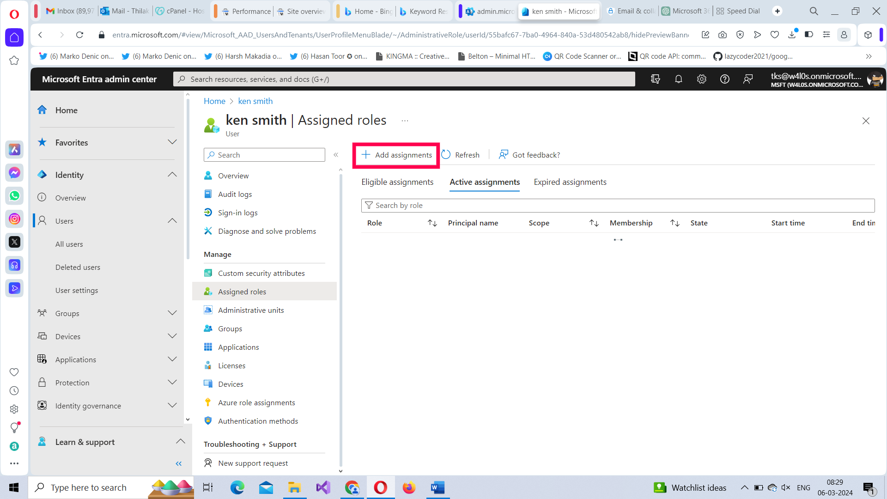
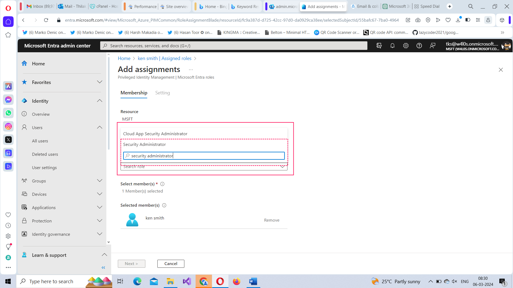

Microsoft 365 Security Admin Center
The Microsoft 365 Security Admin Center is a central hub within the Microsoft 365 suite that provides administrators with tools and functionalities to manage security across their organization. Here are some key functionalities it offers:
- Security Policies Management: Administrators can configure and manage security policies for various Microsoft 365 services such as Exchange Online, SharePoint Online, OneDrive for Business, Teams, and more. This includes setting up policies for threat protection and access controls.
- Threat Protection: The Security Admin Center allows administrators to monitor and manage security threats across the organization. This includes features like threat intelligence, advanced threat protection (ATP), anti-phishing measures, and security reports.
- Security Score: The Security Admin Center provides a security score that helps administrators assess the overall security posture of their organization. It evaluates various security configurations and provides recommendations for improving security.
- Investigation and Remediation: In case of security incidents or suspicious activities, administrators can use the Security Admin Center to investigate and take remediation actions. This includes features like security alerts, audit logs, and incident response capabilities.
- Security Dashboards and Reports: Administrators can access dashboards and reports within the Security Admin Center to get insights into security events, trends, and compliance status across the organization. These insights help in making informed decisions and improving security posture.
- Integration with Microsoft Defender: The Security Admin Center integrates with Microsoft Defender solutions, including Microsoft Defender for Endpoint, Microsoft Defender for Office 365, and Microsoft Defender for Identity, providing a unified security management experience.
Overall, the Microsoft 365 Security Admin Center is designed to empower administrators with the tools and insights needed to protect their organization's data, applications, and infrastructure from security threats. It provides a comprehensive suite of security management functionalities to address the evolving security challenges faced by modern businesses.
How to access Microsoft 365 Security Admin Center?
Microsoft 365 security admin center can be accessed in 2 ways:
- By directly clicking on this URL: https://security.microsoft.com/
- By accessing Security Admin Center blade under Microsoft 365 Admin Center.

Who can access Microsoft 365 Security Admin Center?
Microsoft 365 users with either Global Administrator or Security Administrator roles. ¬¬
How do you assign Microsoft 365 Security Administrator role?
This can be done in 2 ways: (i) Using Microsoft 365 Admin Center and ii) Using Microsoft Entra ID Admin Center.
Using Microsoft 365 Admin Center
Follow these instructions:
- Sign in to the Microsoft 365 Admin Center.
-
Select Admin tab from the Microsoft 365 Home Page.

-
The Microsoft 365 Admin Center Dashboard Opens.

-
Select Users Active Users.

-
Select the user who is to be assigned the Security Administrator role. The user details flyout opens. Select Manage roles under Roles section.

-
Select Admin center access option and then click Show all by category and select Security Administrator role from under Security and Compliance section (as shown in the animated GIF). Then click Save Changes button to save the changes.
Using Microsoft Entra ID Admin Center
Follow these instructions:
-
Select Identity Users All Users. All your users get listed.

-
Select the user for assigning the role. The user details page opens. Select Assigned roles


-
Next select the Add assignments button. Search for and select the Security Administrator role. Click Next button to proceed further.

-
Click the Assign button to assign the selected role.

Note: You can also immediately activate the admin role for the user by selecting the Active option. You also have the option of temporarily assigning the admin role by unchecking the Permanently assigned checkbox and selecting appropriate start and end dates. Remember these options are available only in the Security Admin Center.
Note: Assigning admin roles via Microsoft Entra ID Admin Center is the recommended way of assigning admin roles, as you have granular control over the role assignment here, like for example, assigning role on a temporary basis, deciding start and end dates for assigned role etc.,